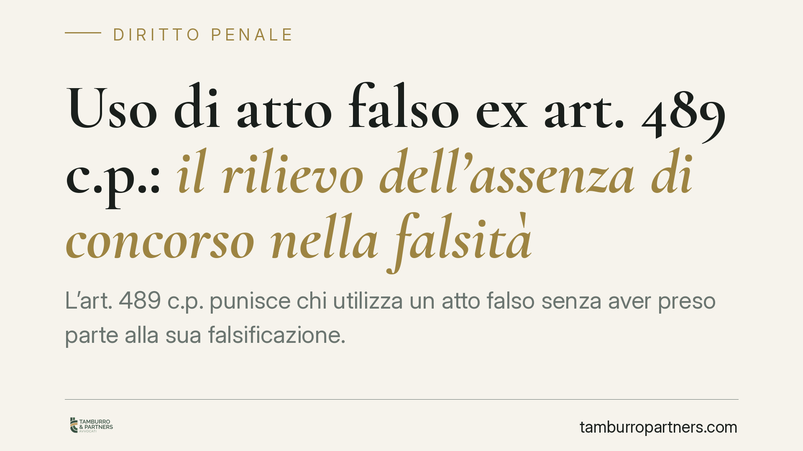

Uso di atto falso ex art. 489 c.p.: il rilievo dell'assenza di concorso nella falsità
L'art. 489 c.p. punisce chi utilizza un atto falso senza aver preso parte alla sua falsificazione. È proprio l'assenza di concorso nella falsità a delimitare il reato: se l'agente ha contribuito a creare il falso, risponde di quella condotta più grave. Un profilo tecnico che incide direttamente sulla qualificazione dell'imputazione e sulla strategia difensiva.

Il tema
L'uso di un documento falso è condotta frequente nei procedimenti penali: dalla produzione in giudizio di una scrittura contraffatta all'esibizione di un atto pubblico alterato. La norma di riferimento è l'art. 489 del codice penale, che disciplina l'uso di atto falso.
Il punto tecnico spesso frainteso riguarda la struttura del reato e il ruolo dell'inciso "senza essere concorso nella falsità". Chiarirlo è decisivo, perché determina se l'imputato risponda del solo uso oppure della più grave condotta di falsificazione.
Inquadramento normativo
L'art. 489 c.p. stabilisce che «chiunque, senza essere concorso nella falsità, fa uso di un atto falso soggiace alle pene stabilite negli articoli precedenti, ridotte di un terzo».
L'elemento qualificante è quello negativo: l'agente non deve aver partecipato alla falsificazione del documento. Questa è la vera funzione dell'inciso. Non si tratta, tecnicamente, di una "clausola di sussidiarietà" rispetto ad altra fattispecie: è un elemento costitutivo negativo del fatto tipico. Chi ha concorso a formare il falso non commette il reato di uso, ma risponde direttamente della falsità materiale o ideologica (artt. 476 e seguenti c.p.), assorbendo in essa il successivo utilizzo.
Il richiamo «alle pene stabilite negli articoli precedenti, ridotte di un terzo» impone di individuare, di volta in volta, la fattispecie di falso di riferimento. Il regime cambia in modo rilevante:
- se il documento usato è un atto pubblico (artt. 476-479 c.p.), il rinvio opera pienamente e la pena è quella prevista per il falso, ridotta di un terzo;
- se si tratta di una scrittura privata, occorre tenere conto della riforma operata dal D.Lgs. 15 gennaio 2016, n. 7, che ha abrogato l'art. 485 c.p. (falsità in scrittura privata), trasformando quella condotta in illecito civile sottoposto a sanzione pecuniaria. Di conseguenza, l'uso di una scrittura privata falsa non richiamabile ad altra fattispecie penale non è più, di per sé, penalmente rilevante ex art. 489.
Questa distinzione è centrale: valutare l'imputazione ex art. 489 senza qualificare correttamente il tipo di documento porta a errori di inquadramento con effetti diretti sulla punibilità.
Perché la distinzione conta
La differenza tra "uso" e "concorso nella falsità" non è teorica. Chi si limita a utilizzare un atto già falsificato da altri risponde di una fattispecie autonoma e meno grave, con pena ridotta di un terzo. Chi invece ha contribuito, anche solo materialmente, a formare o alterare il documento risponde della falsificazione, con trattamento più severo e senza la riduzione prevista dall'art. 489.
Sul piano probatorio, l'accusa deve dimostrare l'uso consapevole di un documento che l'agente sapeva essere falso. La difesa, sul versante opposto, ha spazio per contestare sia l'elemento soggettivo (la conoscenza della falsità), sia la corretta qualificazione del documento e della condotta.
Implicazioni pratiche
Per chi riceve una contestazione ex art. 489 c.p., i profili da presidiare sono essenzialmente tre.
Primo: verificare la natura del documento (atto pubblico o scrittura privata), perché da essa dipende la stessa sussistenza del reato dopo la depenalizzazione del 2016.
Secondo: accertare se all'imputato sia contestato l'uso oppure un concorso nella falsificazione, perché una qualificazione errata può tradursi in un'imputazione più grave del dovuto.
Terzo: ricostruire l'elemento soggettivo, cioè l'effettiva consapevolezza della falsità al momento dell'uso, spesso il vero terreno di contestazione.
Cosa fare in concreto
- Qualifica il documento oggetto di contestazione: distingui atto pubblico e scrittura privata, valutando l'impatto del D.Lgs. 7/2016.
- Controlla il capo di imputazione: verifica se l'accusa contesta l'uso ex art. 489 o un concorso nella falsità, e chiedi eventuale riqualificazione.
- Ricostruisci la conoscenza della falsità: raccogli elementi sul momento e sulle modalità con cui l'atto è pervenuto all'imputato.
- Documenta l'assenza di concorso nella formazione o alterazione del documento, elemento che delimita l'ambito dell'art. 489.
- Valuta le riduzioni di pena e gli istituti deflattivi applicabili al caso concreto, tenendo conto della diminuzione di un terzo prevista dalla norma.
Nota metodologica
Questo contributo espone la struttura dell'art. 489 c.p. e i principali profili applicativi. Ogni contestazione va analizzata sui suoi atti: solo l'esame del fascicolo consente di individuare la corretta qualificazione e le difese proponibili.
---
*Contributo informativo a cura di Tamburro & Partners - Avv. Giuseppe Tamburro. Non costituisce parere legale.*
Ogni condominio ha una storia a sé.
Se gestisci un'amministrazione e vuoi un confronto su una specifica questione condominiale, scrivi allo studio. Ti rispondiamo entro un giorno lavorativo.